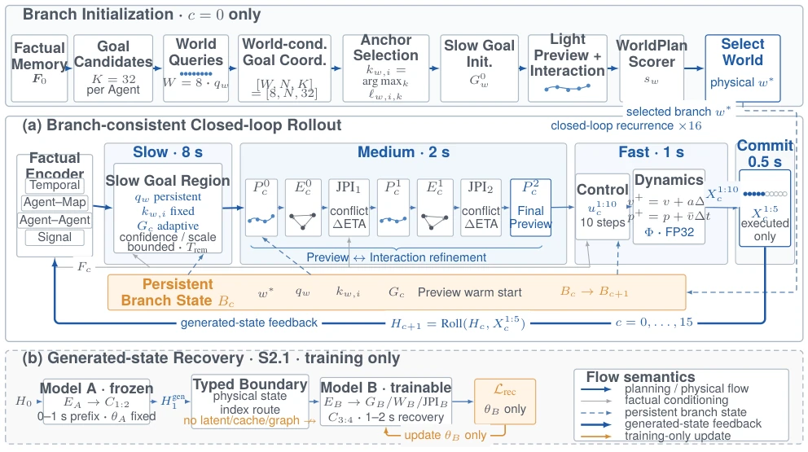

This Hi-FLoop paper attempts to establish a "unified field theory" for multi-agent traffic simulation, utilizing hierarchical state feedback to resolve inconsistencies in long-horizon closed-loop generation. Its highlight lies in treating "World" as a scene-level hypothesis, mandating that all agents share the same branch identity, thereby avoiding the common "patchwork" futures often seen in multi-modal rollout. The A→B frozen prefix recovery training trick is also highly practical, preventing suffix optimization from compromising the prefix. However, a critique is that the architecture involving 8 World candidates plus 16 commits likely entails a non-trivial inference cost. Furthermore, while the "World" concept is promising, whether it truly captures the causal essence of complex interactions remains to be seen through its generalization capabilities. After all, rigidly decoupling intent, interaction, and motion into three layers, though clear, may result in the loss of implicit cross-layer coupling. Moreover, validation solely based on datasets such as H-D means robustness in extreme long-tail scenarios still requires observation, given that closed-loop error accumulation is a fundamental limitation in the physical world.
In closed-loop traffic simulation, position or velocity errors accumulate and propagate over time, altering agent neighborhoods and right-of-way sequences. Existing methods such as QCNet [45] or MTR [24] primarily focus on prediction under fixed histories, while simulators like TrafficSim [28], although introducing feedback, fail to explicitly define the causal boundary between long-horizon intent and short-horizon execution. Multi-modal rollout often results in future incompatibility due to independent resampling modes. Literature [16] indicates that long-horizon simulation requires assessing joint interaction consistency rather than single-trajectory error. Existing hierarchical simulators like BITS [14] or MixSim [29] do not specify how scene-level multi-modal branches maintain identity across agents. This paper aims to address cross-scale decision consistency and the dynamic adaptation of shared branches during rolling generation, particularly preventing unexecuted hypotheses from contaminating factual memory.
The overall architecture is divided into factual memory and persistent branch states. Input history generates factual memory through a QCNet-style encoder. The core consists of a three-layer state: 8s Goal (intent anchor), 2s Preview (interaction plan), and 1s Control (physical motion). Eight Scene-level Worlds propose joint hypotheses; a Scorer selects one World identity, which is shared and fixed across all agents, while Goal and Preview states adaptively update based on execution facts. The Joint Preview Interaction (JPI) module reconstructs interaction topology via sparse graphs, utilizing conflict probability and arrival time differences to refine motion. Training employs S2.1 prefix frozen recovery: Model A generates the 0-1s prefix, while Model B learns the 1-2s recovery; physical states are transmitted via typed boundaries without passing hidden states. Between commits, only a 0.5s execution prefix is backpropagated, and unexecuted hypotheses do not enter the factual memory. This design ensures causal boundaries and prevents gradient shortcuts.

Figure 1. Architecture of HI-FLOOP. At initialization, eight scene-level Worlds propose joint future branches and the scorer selects one physical World whose identity persists through all 16 commits. The recurrent core updates an 8-s Goal, alternates two rounds of 2-s Preview–Interaction refinement, decodes 1-s Control, and writes only the executed 0.5-s prefix back to factual history. The S2.1 path uses a frozen A→B recovery cascade: its typed boundary transfers physical state and causal context, but no latent state, cache, or gradient graph.
Evaluated on the H-D public validation set (955 scenes) for 8s closed-loop rollout. The primary metrics are scene joint ADE/FDE. The S2.1 cascaded model achieves a joint-minFDE@8 of 6.384 m at 8s, with a joint-minADE@8 of 2.048 m. The independent agent center oracle-minADE@8 is 0.526 m and 0.875 m at 6s and 8s, respectively. Training utilized a mix of 5-source datasets (H-D, Waymo, AV2, etc.), with S2.1 trained for 100k steps on a single H100 card. Ablation experiments were not listed in detail, but the importance of prefix freezing for recovery training was emphasized. The results demonstrate superior joint consistency compared to baselines, proving the effectiveness of hierarchical state feedback.